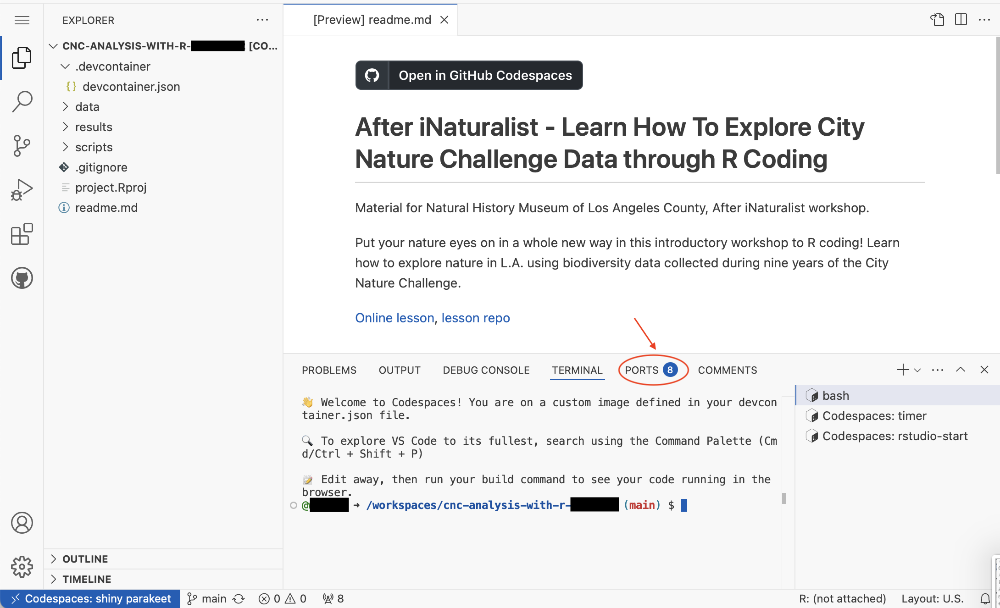
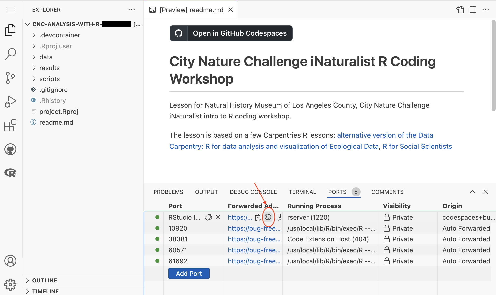
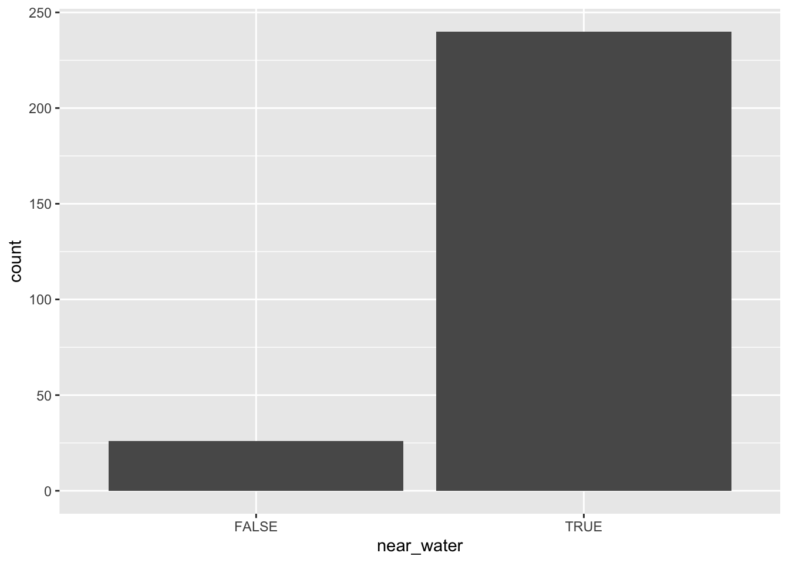
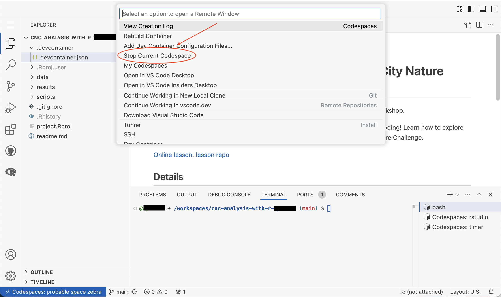

library(readr) # read and write tabular data
library(dplyr) # manipulate data
library(lubridate) # manipulate dates
library(here) # file paths
library(stringr) # work with string
library(ggplot2) # create data visualizations
library(sf) # handle vector geospatial data
library(mapview) # create interactive maps
source(here('scripts/data_utils.R'))Example Analysis
This lesson shows how to I used some of the code samples in the previous lessons to create an analysis that has maps and charts.
Goal: I want all research grade observations for Great Blue Heron. I want compare observations near bodies of water and observations not near bodies of water.
Restart Codespace
First step is to start Codespace.
Go to data-explorers-feb-2025 Github page, and you should see your repository. Click on your repository.
Scroll to the bottom of the page, and click the “Open in GitHub Codespaces” button. This will restart the Codespace created in the “Setup Github Classroom and Codespaces” section.
This is Visual Studio Code, the default code editor for GitHub Codespaces. We want to use RStudio as our code editor.

Once the Codespace has started, it will run a script for timer, and start RStudio. In the lower right, there should be a “bash”, “Codespaces: timer”, and “Codespaces: rstudio-start”.
Click on the “PORTS” tab at the bottom.

In the PORTS tab, hover over the item named RStudio or 8787. Click on the middle globe icon to start RStudio in a new browser tab.

Now you are ready to write and run R code using RStudio.
Even though we won’t use Visual Studio Code to write R code, keep the tab for Visual Studio Code open.

Creating script
I create a file called ‘heron-analysis.R’, and save it in the ‘scripts’ folder.
First step is load the R packages.
Select City Nature Challenge observations
There CNC 191K observations for LA County. I need to select the observations that I want.
First I need to import the City Nature Challenge iNaturalist observations.
inat_data <- read_csv(here('data/cleaned/cnc-los-angeles-observations.csv'))Rows: 191638 Columns: 37
── Column specification ────────────────────────────────────────────────────────
Delimiter: ","
chr (26): time_observed_at, user_login, user_name, created_at, updated_at, ...
dbl (7): id, user_id, latitude, longitude, positional_accuracy, public_pos...
lgl (3): captive_cultivated, coordinates_obscured, threatened
date (1): observed_on
ℹ Use `spec()` to retrieve the full column specification for this data.
ℹ Specify the column types or set `show_col_types = FALSE` to quiet this message.I use names() to see the list of column names.
names(inat_data) [1] "id" "observed_on"
[3] "time_observed_at" "user_id"
[5] "user_login" "user_name"
[7] "created_at" "updated_at"
[9] "quality_grade" "license"
[11] "url" "image_url"
[13] "sound_url" "tag_list"
[15] "description" "captive_cultivated"
[17] "latitude" "longitude"
[19] "positional_accuracy" "public_positional_accuracy"
[21] "geoprivacy" "taxon_geoprivacy"
[23] "coordinates_obscured" "scientific_name"
[25] "common_name" "iconic_taxon_name"
[27] "taxon_id" "taxon_kingdom_name"
[29] "taxon_phylum_name" "taxon_class_name"
[31] "taxon_order_name" "taxon_family_name"
[33] "taxon_genus_name" "taxon_species_name"
[35] "taxon_subspecies_name" "threatened"
[37] "establishment_means" I use the filter() to select which observations I want.
I search iNaturalist for ‘great blue heron’, and go to its taxa page since I want to use the scientific names in my filter() query. The kingom is ‘Animalia’ and the species is ‘Ardea herodias’.
Now that I have the scientific names, I can write my filter() query. I use dim() to display the number rows and columns.
heron_obs <- inat_data %>%
filter(taxon_kingdom_name == 'Animalia' &
taxon_species_name == 'Ardea herodias')
dim(heron_obs)[1] 274 37There are 274 Great Blue Heron observations.
I also want to see how many observations are research grade. If there are a lot of “casual” or “need_id” observations, then I might also include them in my analysis.
I use table() to get the number of observations for each quality_grade value.
table(heron_obs$quality_grade)
casual needs_id research
7 1 266 Since there are a lot of ‘research’ grade observations, I’m fine with limiting the observations to ‘research’ grade.
Since I want to look for observations in a certain area, I want to exclude observations that have obscured location. I use table() to get number of observations that have obscured locations.
table(heron_obs$coordinates_obscured)
FALSE TRUE
273 1 I need to update my query.
heron_obs <- inat_data %>%
filter(taxon_kingdom_name == 'Animalia',
taxon_species_name == 'Ardea herodias') %>%
filter(quality_grade == 'research') %>%
filter(coordinates_obscured == FALSE)
dim(heron_obs)[1] 266 37We have 266 research observations for Great Blue Heron with unobscured locations.
We can use unique to double check the filter() queries give us the results we expect.
unique(heron_obs$taxon_kingdom_name)[1] "Animalia"unique(heron_obs$taxon_species_name)[1] "Ardea herodias"unique(heron_obs$quality_grade)[1] "research"unique(heron_obs$coordinates_obscured)[1] FALSESave the iNaturalist observations as a csv.
write_csv(heron_obs, here('results/heron_observations.csv'), na='')Create a map with CNC observations
Now that I have the observations I want, I can plot them on a map.
Since I want to create a map, I need to use st_as_sf() to convert the dataframe into a sf object with a geometry column.
heron_obs_sf <- heron_obs %>%
st_as_sf(coords = c("longitude", "latitude"), crs = 4326)Now I can use mapview() to create an interactive map. Being able to zoom in and out makes it easier to explore the data.
mapview(heron_obs_sf)
When I click on a blue circle on the map, the pop table shows all 37 columns, which is too much information. I can use select() to limit the number of columns.
heron_map <- heron_obs_sf %>%
select(user_login, observed_on, common_name, taxon_species_name, image_url)Now when I click on each blue circle, the popup shows 6 fields.
mapview(heron_map)
Add bodies of water to the map
I want to study heron observations near water. First I need to load the file with the water areas.
water_areas <- read_sf(here('data/cleaned/la_county_waterareas.geojson'))Then I use st_crs() to check the if the CRS of the heron observations is the same as the CRS of the water areas.
st_crs(water_areas) == st_crs(heron_obs_sf)[1] FALSESince the CRS are different, I need to change CRS for the water areas using st_transform()
water_areas <- st_transform(water_areas, crs = st_crs(heron_obs_sf))
st_crs(water_areas) == st_crs(heron_obs_sf)[1] TRUENow I can add the water areas to the map. I set the color for the iNaturalist observations to green to make them easier to see.
mapview(heron_map, col.regions='green') +
mapview(water_areas)
Observations near bodies of water
I want to get observations within 1/2 mile of a body of water. This means I need to create a buffer 1/2 mile for all bodies of water.
create buffer
We used CRS 4326 for the iNaturalist observations. 4326 uses angle degrees to measure distance. To create a buffer for a certain distance, I need to change the CRS to a CRS that uses meters. CRS 5070 uses meters.
water_areas_5070 <- st_transform(water_areas, crs=5070)Then I use st_buffer() to create a buffer. 1/2 miles is about 805 meters.
buffer_water_areas_5070 <- st_buffer(water_areas_5070, 805)After creating the buffer, I need to change the CRS back to 4326.
buffer_water_areas <- st_transform(buffer_water_areas_5070, crs=st_crs(heron_obs_sf))Then I can create a map with the buffers.
mapview(heron_obs_sf, col.regions='green') +
mapview(buffer_water_areas)
Looking at the map, I notice that most ‘Great Blue Heron’ observations are near bodies of water. I also notice that some of the smaller bodies of water aren’t included in ‘water_areas’.
observations near water, version 1
I can use lengths(st_intersects()) >0 to select the observations within a geographic area.
The following code returns TRUE if an observation is within the water buffer, and returns FALSE if it outside the buffer.
lengths(st_intersects(heron_obs_sf, buffer_water_areas)) > 0 [1] TRUE TRUE TRUE TRUE TRUE TRUE FALSE TRUE TRUE FALSE TRUE TRUE
[13] TRUE TRUE TRUE TRUE TRUE FALSE TRUE TRUE TRUE TRUE TRUE TRUE
[25] TRUE TRUE TRUE TRUE TRUE TRUE TRUE TRUE TRUE TRUE TRUE TRUE
[37] TRUE TRUE TRUE TRUE TRUE TRUE TRUE TRUE TRUE TRUE TRUE TRUE
[49] TRUE TRUE FALSE TRUE TRUE TRUE TRUE FALSE TRUE FALSE FALSE TRUE
[61] TRUE TRUE TRUE TRUE FALSE TRUE TRUE TRUE TRUE TRUE TRUE TRUE
[73] TRUE TRUE TRUE TRUE TRUE TRUE TRUE TRUE TRUE TRUE TRUE FALSE
[85] FALSE FALSE FALSE TRUE TRUE TRUE TRUE TRUE TRUE TRUE TRUE TRUE
[97] FALSE TRUE TRUE FALSE TRUE TRUE TRUE TRUE TRUE FALSE TRUE TRUE
[109] TRUE TRUE TRUE TRUE TRUE TRUE TRUE TRUE TRUE TRUE TRUE TRUE
[121] TRUE TRUE TRUE TRUE TRUE TRUE TRUE TRUE TRUE TRUE TRUE TRUE
[133] TRUE TRUE TRUE TRUE TRUE TRUE TRUE TRUE TRUE TRUE FALSE TRUE
[145] TRUE TRUE TRUE TRUE TRUE TRUE TRUE TRUE TRUE TRUE TRUE TRUE
[157] TRUE TRUE TRUE TRUE TRUE TRUE FALSE TRUE TRUE TRUE TRUE TRUE
[169] TRUE TRUE TRUE FALSE TRUE TRUE TRUE TRUE TRUE FALSE TRUE TRUE
[181] TRUE TRUE TRUE TRUE TRUE FALSE TRUE TRUE TRUE TRUE TRUE TRUE
[193] TRUE TRUE TRUE TRUE TRUE TRUE TRUE TRUE TRUE TRUE TRUE TRUE
[205] TRUE TRUE TRUE TRUE FALSE TRUE FALSE FALSE TRUE TRUE TRUE TRUE
[217] TRUE TRUE TRUE TRUE TRUE TRUE TRUE TRUE TRUE TRUE TRUE TRUE
[229] TRUE TRUE TRUE TRUE TRUE TRUE TRUE TRUE TRUE TRUE TRUE TRUE
[241] TRUE FALSE TRUE TRUE TRUE TRUE TRUE TRUE TRUE TRUE TRUE TRUE
[253] TRUE FALSE TRUE TRUE TRUE TRUE TRUE FALSE TRUE TRUE TRUE TRUE
[265] TRUE TRUEThen I use the TRUE/FALSE vector to select observations in a dataframe using dataframe[lengths(st_intersects()) >0, ].
heron_near_water_sf <- heron_obs_sf[lengths(st_intersects(heron_obs_sf, buffer_water_areas)) > 0, ]
dim(heron_near_water_sf)[1] 240 36I have 240 observations near water.
Then I can create a map with the buffers.
mapview(heron_near_water_sf, col.regions='green') +
mapview(buffer_water_areas)
I can save the map as an image. First I assign the assign code for map to an object called heron_map.
heron_map <- mapview(heron_near_water_sf, col.regions='green') +
mapview(buffer_water_areas)Then I use mapshot2() to save heron_map in the results folder as .png image
mapshot2(heron_map, file = here('results/heron_near_water_draft.png'))observations near water, version 2
While the previous code let me get the observations that were near water, I wasn’t able to capture the observations not near water. I can adjust the code to add a column with TRUE/FALSE values to heron_obs_sf so I can keep track of which observations are near a body of water.
lengths(st_intersects()) >0 produce a vector with TRUE/FALSE values. I can use mutate() to add a near_water column that stores the TRUE/FALSE values.
heron_near_water_sf <- heron_obs_sf %>%
mutate(near_water = lengths(st_intersects(heron_obs_sf, buffer_water_areas)) > 0)I can use table() to get a count of the observations near water.
table(heron_near_water_sf$near_water)
FALSE TRUE
26 240 240 observations are near water, 26 are not near water.
Next I save the iNaturalist observations as a csv.
write_csv(heron_near_water_sf, here('results/heron_near_water.csv'), na='')Create chart
I want to create a bar chart that shows the heron observations near water. I use the column near_water for the x axis.
ggplot()+
geom_bar(data=heron_near_water_sf, mapping=aes(x=near_water))
Next I want to update the appearance of the chart. I use labs() to add titles, subtitle, and axis labels. I use theme_bw() and theme() to change overall appearance of the chart.
I assign the code for the chart to heron_chart object.
heron_chart <- ggplot()+
geom_bar(data=heron_near_water_sf, mapping=aes(x=near_water)) +
labs(title = 'CNC observations for Great Blue Herons in LA County',
subtitle='2016-2024',
x='Within 1/2 mile of water',
y='observations count') +
theme_bw() +
theme(title = element_text(size = 14),
panel.grid.major.x = element_blank(),
panel.grid.minor.x = element_blank())
heron_chart
I save heron_chart as a jpg in the rsults folder using ggsave().
ggsave(filename = here('results/heron_observations_near_water_chart.jpg'),
plot = heron_chart, height = 6, width = 8)Create map
I want to create a nice looking map for my presentation. I want to add LA County and titles to the map. ggplot offers more ways to customize the look of the map than mapview, so I use ggplot to create a map.
One thing I want to add to the map is LA County boundary. I load the LA County file.
LA_county <- read_sf(here('data/cleaned/los_angeles_county/los_angeles_county.shp'))I create a map with LA County boundaries, water areas, and heron observations. I color code the observations based on if they are near water using mapping=aes(color=near_water).
ggplot() +
geom_sf(data=LA_county, fill='white') +
geom_sf(data=heron_near_water_sf, mapping=aes(color=near_water)) +
geom_sf(data=water_areas, fill='#007399')
I use labs() to add titles, subtitle, legend title. I use theme_void() and theme() to change overall appearance of the map.
I assign the code for the chart to heron_map object.
heron_map <- ggplot() +
geom_sf(data=LA_county, fill='white') +
geom_sf(data=heron_near_water_sf, mapping=aes(color=near_water)) +
geom_sf(data=water_areas, fill='#007399') +
labs(title = 'CNC observations for Great Blue Herons in LA County',
subtitle='2016-2024',
color='Within 1/2 mile of water') +
theme_void() +
theme(title = element_text(size = 13))
heron_map
I use ggsave() to save maps created with ggplot.
ggsave(filename = here('results/heron_observations_near_water_map.jpg'),
plot = heron_map, height = 6, width = 8)Download iNaturalist images
I want include some images of heron in my presentation. I want to download three images for the selected observations.
I use filter() to select observations that have ‘CC0’, ‘CC-BY’, or ‘CC-BY-NC’ license. I use slice_sample() to get 3 random observations. Then I use download_inaturalist_images() to download images.
heron_images <- heron_near_water_sf %>%
filter(license %in% c('CC0', 'CC-BY', 'CC-BY-NC')) %>%
slice_sample(n=3)
download_inaturalist_images(heron_images)Download files from Codespace
I saved CSVs and images to Codespace. I then need to download the files to my computer.
Use the RStudio “Files” tab in the lower right corner. Click on the folders and green up arrow to navigate through the directories. Click the checkbox to select the files you want.
Click “More” and a popup window will appear. Click “Export…”
Click “Download” button on the popup window. The files will be saved to folder that your browser uses for the downloads.

Stop Codespace
After I finish my work for the day, I need to stop R, push my code changes to my repository and, stop Codespace.
To stop R, click the orange circle in the upper right of RStudio.
I will see a message “R Session Ended”. Close the browser tab for RStudio.
Go to the Visual Studio Code browser tab. Click “bash”. Click “TERMINAL”.

To save the changed files to my repository, type “bash scripts/save_files.sh” after the $, and hit return/enter.
To stop Codespace, click the blue area in the lower left corner of Visual Studio Code.
A popup window will appear. Click “Stop Current Codespace”.

After a little while, I will see a “Codespace is stopped” message. I can now close the browser tab.

Complete script
Here is all the code for the analysis. Some of the code is for checking results, such as name(), dim(), and table(). Some of the code such as ‘observations near water, version 1’ are things that I tried but end up not using because I tried something else.
## =================
## load_packages
## =================
library(readr) # read and write tabular data
library(dplyr) # manipulate data
library(lubridate) # manipulate dates
library(here) # file paths
library(stringr) # work with string
library(ggplot2) # create data visualizations
library(sf) # handle vector geospatial data
library(mapview) # create interactive maps
source(here('scripts/data_utils.R'))
## =================
## Select City Nature Challenge observations
## =================
inat_data <- read_csv(here('data/cleaned/cnc-los-angeles-observations.csv'))
names(inat_data)
heron_obs <- inat_data %>%
filter(taxon_kingdom_name == 'Animalia' &
taxon_species_name == 'Ardea herodias')
dim(heron_obs)
table(heron_obs$quality_grade)
table(heron_obs$coordinates_obscured)
heron_obs <- inat_data %>%
filter(taxon_kingdom_name == 'Animalia',
taxon_species_name == 'Ardea herodias') %>%
filter(quality_grade == 'research') %>%
filter(coordinates_obscured == FALSE)
dim(heron_obs)
unique(heron_obs$taxon_kingdom_name)
unique(heron_obs$taxon_species_name)
unique(heron_obs$quality_grade)
unique(heron_obs$coordinates_obscured)
write_csv(heron_obs, here('results/heron_observations.csv'), na='')
## =================
## Create a map with CNC observations
## =================
heron_obs_sf <- heron_obs %>%
st_as_sf(coords = c("longitude", "latitude"), crs = 4326)
mapview(heron_obs_sf)
heron_map <- heron_obs_sf %>%
select(user_login, observed_on, common_name, taxon_species_name, image_url)
mapview(heron_map)
## =================
## Add bodies of water to the map
## =================
water_areas <- read_sf(here('data/cleaned/la_county_waterareas.geojson'))
st_crs(water_areas) == st_crs(heron_obs_sf)
water_areas <- st_transform(water_areas, crs = st_crs(heron_obs_sf))
st_crs(water_areas) == st_crs(heron_obs_sf)
mapview(heron_map, col.regions='green') +
mapview(water_areas)
## =================
## Observations near bodies of water
## =================
## create buffer
water_areas_5070 <- st_transform(water_areas, crs=5070)
buffer_water_areas_5070 <- st_buffer(water_areas_5070, 805)
buffer_water_areas <- st_transform(buffer_water_areas_5070, crs=st_crs(heron_obs_sf))
mapview(heron_obs_sf, col.regions='green') +
mapview(buffer_water_areas)
## observations near water, version 1
lengths(st_intersects(heron_obs_sf, buffer_water_areas)) > 0
heron_near_water_sf <- heron_obs_sf[lengths(st_intersects(heron_obs_sf, buffer_water_areas)) > 0, ]
dim(heron_near_water_sf)
mapview(heron_near_water_sf, col.regions='green') +
mapview(buffer_water_areas)
heron_map <- mapview(heron_near_water_sf, col.regions='green') +
mapview(buffer_water_areas)
mapshot2(heron_map, file = here('results/heron_near_water_draft.png'))
## observations near water, version 2
heron_near_water_sf <- heron_obs_sf %>%
mutate(near_water = lengths(st_intersects(heron_obs_sf, buffer_water_areas)) > 0)
table(heron_near_water_sf$near_water)
write_csv(heron_near_water_sf, here('results/heron_near_water.csv'), na='')
## =================
## Create chart
## =================
ggplot()+
geom_bar(data=heron_near_water_sf, mapping=aes(x=near_water))
heron_chart <- ggplot()+
geom_bar(data=heron_near_water_sf, mapping=aes(x=near_water)) +
labs(title = 'CNC observations for Great Blue Herons in LA County',
subtitle='2016-2024',
x='Within 1/2 mile of water',
y='observations count') +
theme_bw() +
theme(title = element_text(size = 14),
panel.grid.major.x = element_blank(),
panel.grid.minor.x = element_blank())
heron_chart
ggsave(filename = here('results/heron_observations_near_water_chart.jpg'),
plot = heron_chart, height = 6, width = 8)
## =================
## Create map
## =================
LA_county <- read_sf(here('data/cleaned/los_angeles_county/los_angeles_county.shp'))
ggplot() +
geom_sf(data=LA_county, fill='white') +
geom_sf(data=heron_near_water_sf, mapping=aes(color=near_water)) +
geom_sf(data=water_areas, fill='#007399')
heron_map <- ggplot() +
geom_sf(data=LA_county, fill='white') +
geom_sf(data=heron_near_water_sf, mapping=aes(color=near_water)) +
geom_sf(data=water_areas, fill='#007399') +
labs(title = 'CNC observations for Great Blue Herons in LA County',
subtitle='2016-2024',
color='Within 1/2 mile of water') +
theme_void() +
theme(title = element_text(size = 13))
heron_map
ggsave(filename = here('results/heron_observations_near_water_map.jpg'),
plot = heron_map, height = 6, width = 8)
## =================
## Download iNaturalist images
## =================
heron_images <- heron_near_water_sf %>%
filter(license %in% c('CC0', 'CC-BY', 'CC-BY-NC')) %>%
slice_sample(n=3)
download_inaturalist_images(heron_images)